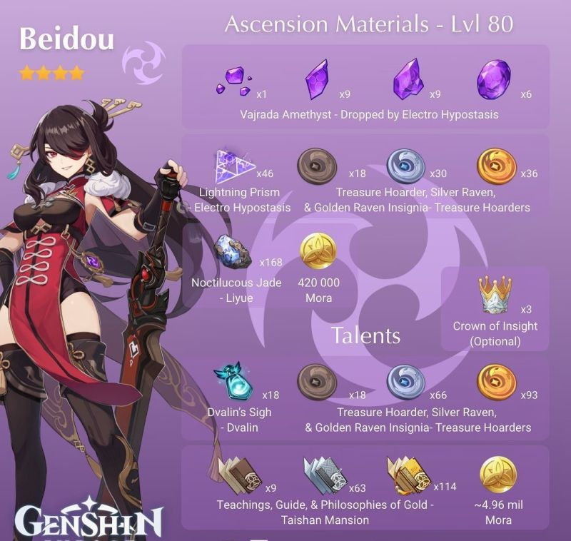
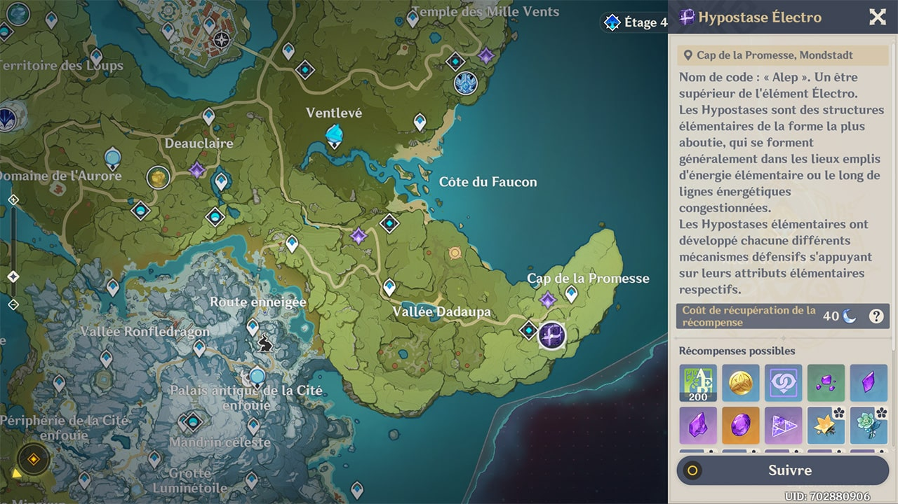

Guide Pour Beidou
Matérieux d'améliortaions necessaires

Où les trouver :
-
- Amethyst :
L'amethyst est une resource qui peut s'obtenir sur la majorité des Boss de types Electro ainsi que dans l'antre de stormterror.
Cependant le mieux pour obtenir reste l'hypostase Electro car il drop aussi des prisme d'éclairs aussi necessaires
a l'amélioration de beidou
Localisation :

-
- Insigne de corbeau :
Les insignes de borbeau s'obtiennent sur des pilleurs de trésors présent sur toute la map,
le meilleur moyen pour les trouver est donc de faire "suivre" dans le guide du voyageur
-
- Jade noctiluque :
Le jade noctiluque est un minerais principalement présent dans les grottes de Liyue.
Localisation :
Artéfacts
Lesquels choisir ?
Tout d'abors, Beidou est un soutien DPS souvent utiliser pour son contre qui inflige de lourds dégâts sans perde de vie ou son ulti.